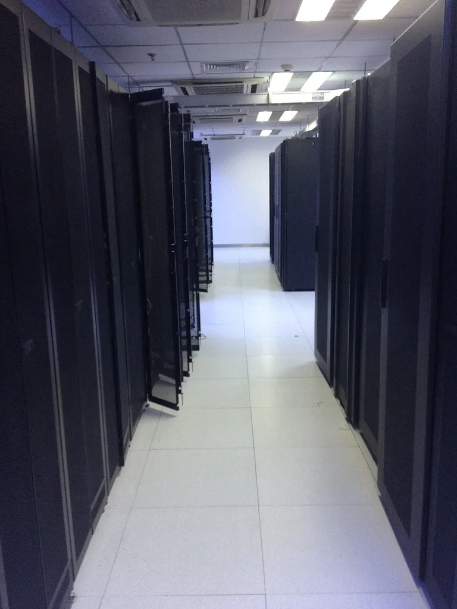
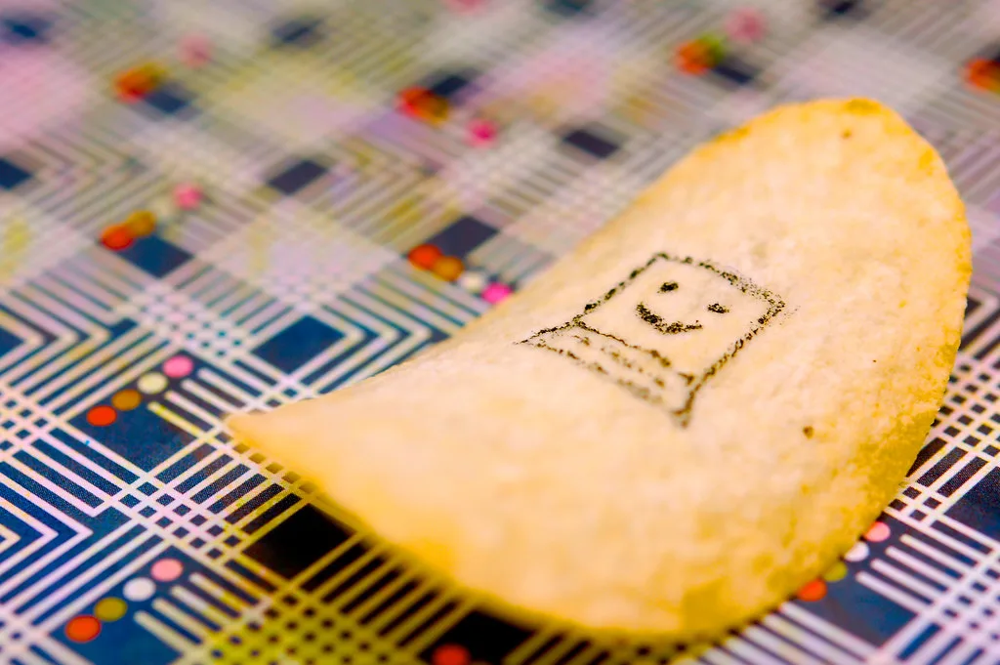

미국 정부가 중국 기업이 해외 데이터센터를 거쳐 미국산 첨단 인공지능(AI) 반도체를 빌려 쓰던 통로를 막는 새 수출 통제를 내놨다. 미국 상무부 산업안보국(BIS)은 16일(현지시간) 수출 통제 대상국 기업이 제3국에 설치된 AI 칩을 원격으로 활용하는 행위를 규제하는 규정을 발표했다. 칩 자체를 직접 들여오지 못하게 막아 온 기존 규제의 빈틈을 '클라우드 접속'까지 넓혀 메우겠다는 것이다.
새 규정의 핵심은 연산 능력을 원격으로 제공하는 데이터센터에 대한 허가 의무다. 보도에 따르면 미국의 무기 금수 대상인 20여 개국, 즉 중국과 러시아, 이란, 북한, 쿠바 등에 본사를 둔 기업에 상당한 규모의 컴퓨팅 자원을 제공하는 해외 데이터센터는 90일 안에 미국 정부의 수출 허가를 받아야 서비스를 이어갈 수 있다. 허가 없이 계속하면 추가 수출 제한을 받을 수 있고, 중개업체를 끼워 넣는 방식도 규제 대상에 포함됐다.

국가별 통제도 한층 촘촘해졌다. 싱가포르와 태국, 말레이시아, 인도네시아, 브라질 등 5개국에는 앞으로 첨단 AI 칩을 수출할 때 사전 허가가 필요하다. 미국 정부는 이들 국가에서 첨단 반도체가 중국으로 흘러갈 위험이 통상 수준보다 높다고 판단한 것으로 알려졌다. 상무부가 향후 적용 대상국을 추가할 수 있다는 조항도 담겼다. 동남아 각국이 최근 대형 데이터센터 유치 경쟁을 벌여 왔다는 점에서 해당 국가들의 산업 정책에도 적잖은 파장이 예상된다.
이번 조치의 배경으로는 동남아 데이터센터를 통한 우회 의혹이 꼽힌다. 그동안 중국 기업들이 직접 구매가 막힌 고성능 그래픽처리장치(GPU)를 해외 클라우드에서 임차해 AI 모델 학습에 쓴다는 지적이 끊이지 않았고, 최근에는 싱가포르의 한 데이터센터 업체를 둘러싼 칩 전용 의혹과 엔비디아 경영진 논란까지 겹쳤다. 워싱턴 정가에서 수출 통제가 사실상 형해화됐다는 비판이 커지자 행정부가 뒤늦게 대응에 나섰다는 평가도 나온다.
다만 모든 원격 이용이 막히는 것은 아니다. 온라인 쇼핑몰이나 소셜미디어의 상품·콘텐츠 추천처럼 위험도가 낮은 용도는 이번 규제의 적용을 받지 않는다. 규제의 초점이 대규모 AI 모델 개발과 군사적 전용 가능성이 있는 고성능 연산에 맞춰져 있다는 뜻이다. 그러나 데이터센터 사업자 입장에서는 고객사의 실소유 구조와 이용 목적을 일일이 확인해야 하는 부담이 커질 수밖에 없다.

시장은 즉각 반응했다. 발표 직후 엔비디아 주가는 4%가량 떨어졌고, 미국 반도체주 전반이 약세를 보였다. 그 여파는 17일 아시아 증시로 이어져 코스피가 장 초반 5000선 아래로 밀리는 등 국내 반도체 대형주도 흔들렸다. 동남아 데이터센터 투자에 공을 들여 온 글로벌 클라우드 기업들의 사업 계획에도 변수가 생겼다는 분석이 나온다.
업계에서는 이번 규제가 실제로 얼마나 엄격하게 집행될지가 관건이라고 본다. 허가 심사가 까다로워지면 동남아 지역의 AI 인프라 확충 속도가 늦어질 수 있고, 중국은 자체 칩 개발과 대체 공급망 구축에 더욱 속도를 낼 가능성이 크다. 미국 상무부의 세부 지침과 각국 정부의 대응, 그리고 우리 반도체 기업의 수출 전략에 미칠 영향을 당분간 주의 깊게 지켜볼 필요가 있다.